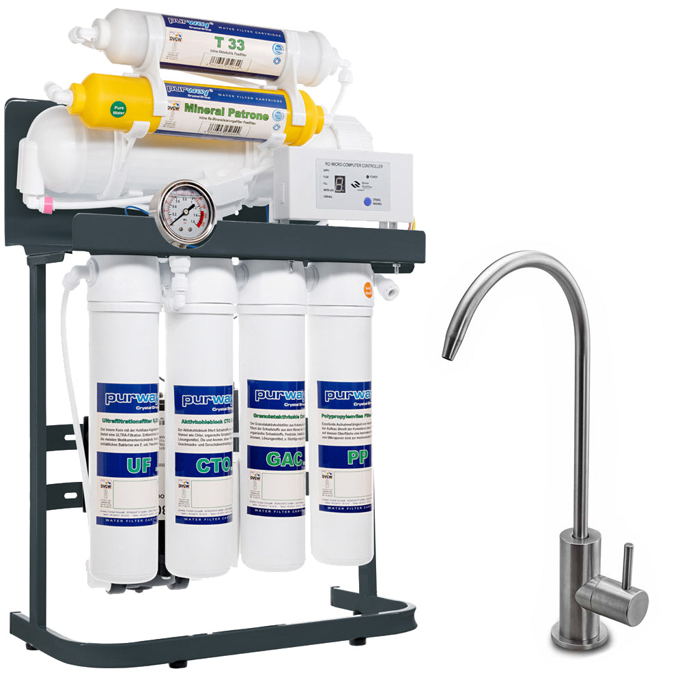

Direct Flow RO
Purway PUR Booster Quick
Tanklose 7-stufige PUR Booster Quick Direct-Flow-Anlage mit 400-GPD-Membran und Boosterpumpe.
309 €
Technische Daten
| Preis | 309 € (Herstellerseite bei Recherche) |
| EAN | 4260303252520 |
| Filterstufen | 7 |
| Membran | 400 GPD |
| Durchfluss | bis ca. 1,1 L/min |
| Tagesleistung | bis ca. 1.500 Liter |
| Reinwasser/Abwasser | max. 1:1, abhängig von der Wasserqualität |
| Wasserleitungsdruck | 1–4 bar |
| Wassertemperatur | 5–40 °C |
| Stromversorgung | AC 120–230 V, 50–60 Hz, 80 W |
| Gerätegewicht | ca. 8,8 kg |
| Filterpaketgewicht | ca. 1,2 kg |
| Gerätemaße | 49 × 37 × 19 cm (H × B × T) |
| Einbaumaße | 54 × 37 × 19 cm |
| Bedienung | LED-Computersteuerung |
| Filterwechsel | Twist-Change-System |
| Spülung | Manuell und automatisch |
| Sicherheit | Wasserstoppventil |
| Filterfolge | PP 10 µm; GAC; CTO 5 µm; UF 0,02 µm; RO 400 GPD; T33; Remineralisierung |
| Wechselintervalle | Vor-/Postfilter ca. 6 Monate; Membran ca. 1–2 Jahre |
Datenhinweis
Die Angaben stammen aus öffentlich zugänglichen Hersteller- und Produktunterlagen. Nicht veröffentlichte Werte wurden nicht geschätzt. Änderungen und Modellvarianten sind möglich.
Technologie und Wasserwissen
Diese Ratgeber erklären die eingesetzten Verfahren, Messwerte und Grenzen unabhängig von einzelnen Herstellerangaben.
- Umkehrosmose: Funktion und Filterleistung
- TDS im Wasser richtig einordnen
- Aktivkohlefilter richtig einsetzen
Wasserwissen entdecken · Alle Filtertechnologien · Produkte vergleichen